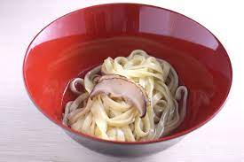
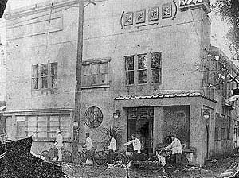
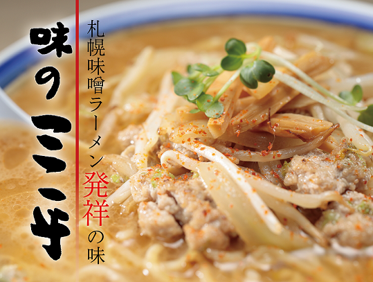
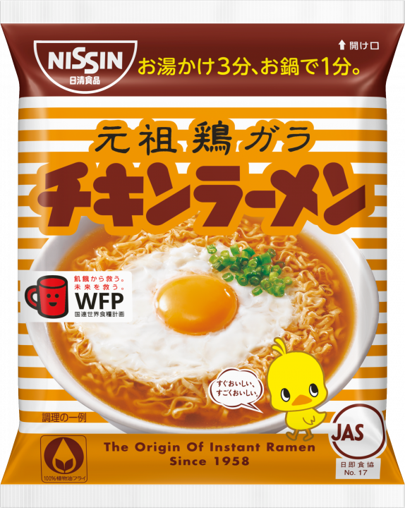
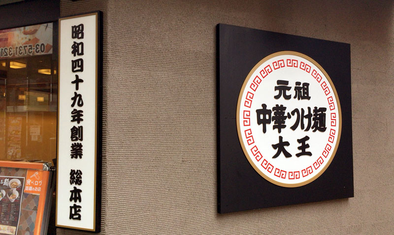
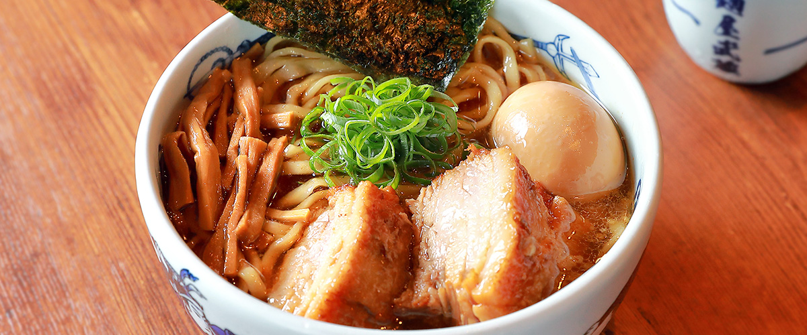
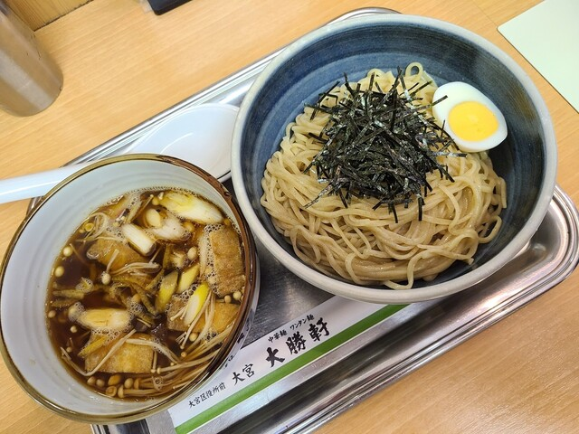
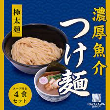

1488年日本初の中華麺「経帯麺」が食べられた。この麺にはかん水が使われてお
り、このレシピは現代のラーメンの麺とほぼ同じであった。
1859年
開港により多くの外国人が移り住み、海外の食文化が流入する事となる。
これをきっかけにラーメンのルーツである中国の麺料理も日本に伝わる事となる。
1899年
居留地廃止に伴い、中国の麺料理を含め中国料理が広がっていく。
1910年尾崎貫一氏が「淺草 來々軒」をオープン。その後、日本初の一大ラーメンブームを起こす事となる。

1923年札幌「竹家食堂」営業開始。札幌ラーメンの元祖だが、現在のような濃厚
な味噌ラーメンではなく、比較的あっさり目の醤油ラーメンがメインだった。現在は
その味を受け継ぐ「竹家」が、神戸市にて営業中。
1923年関東大震災により、東京･横浜を中心としたラーメン店が全国へ散らばる。
被災したことにより屋台が増加し、ラーメン専門店が増える。
1939年第二次世界大戦がはじまり、多くのラーメン店が閉店する。
（戦後復活したお店もある）
1945年終戦後、各地域に闇市が誕生し、ラーメンが人気に
1947年久留米「三九」で、白濁した豚骨スープを出し始める。「南京千両」はさらりとした豚骨スープだったが、「三九」のスープは現在の九州ラーメンの源流になる物。博多、熊本などを始め、九州全域に大きな影響を与えている。

1954年札幌「味の三平」にて、大宮守人氏が味噌ラーメンを開発。札幌ラーメンの
方向性を決定づけただけではなく、後の札幌味噌ラーメンブームを引き起こす。
1958年初のインスタントラーメン「日清チキンラーメン」発売。
「支那そば」→「中華そば」と言われていたラーメンの、「ラーメン」という呼称が
全国的に広まった。
1967年全国にラーメン店のフランチャイズ展開を開始し、わずか3年で500店舗、ピーク時には約1,200店舗まで拡大した。


1973年「つけ麺」の名付け親である、「つけ麺大王」がオープン。

1996年青山「麺屋武蔵」、中野「香門」「青葉」、横浜「くじら軒」など、その後業
界をリードしていく個性店、個性的なご主人がこの前後に相次いで登場した。
2000年地域に注目する「ご当地ラーメン」から、作る「人」に注目が集まった「ご当人
ラーメンブーム」が起こる。
2002年「大勝軒」「二郎」の暖簾分けの店が続々と出店し、全国的にラーメンをテーマとした施設が続々とオープンする。


2008~2010年多くの種類のラーメンがブームになる。
2015年「Japanese Soba Noodles 蔦（巣鴨）」がミシュランガイドで世界初の1つ星を獲得する。

.jpg)
.jpg)